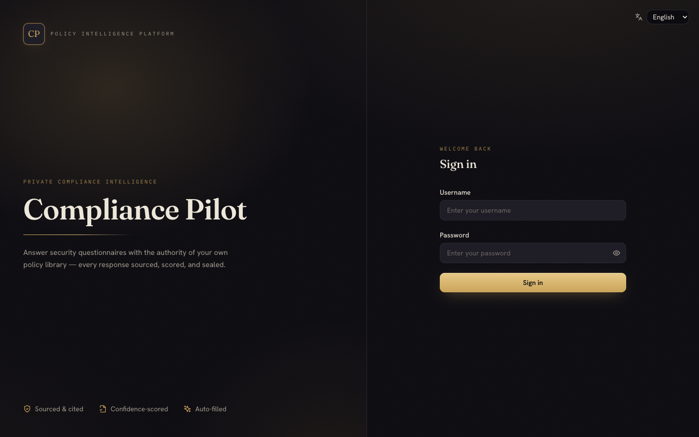
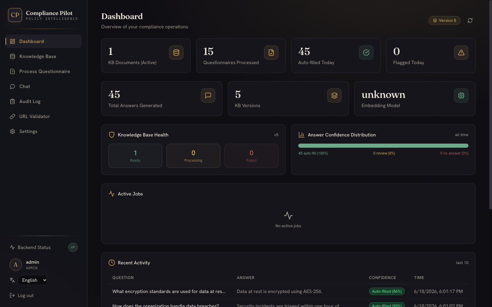
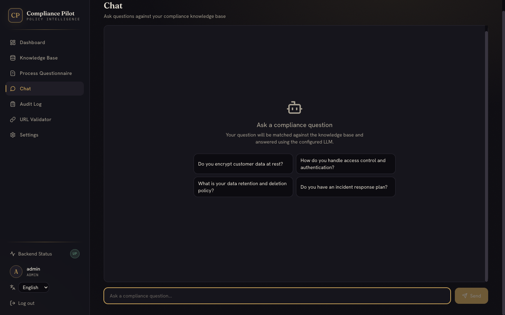
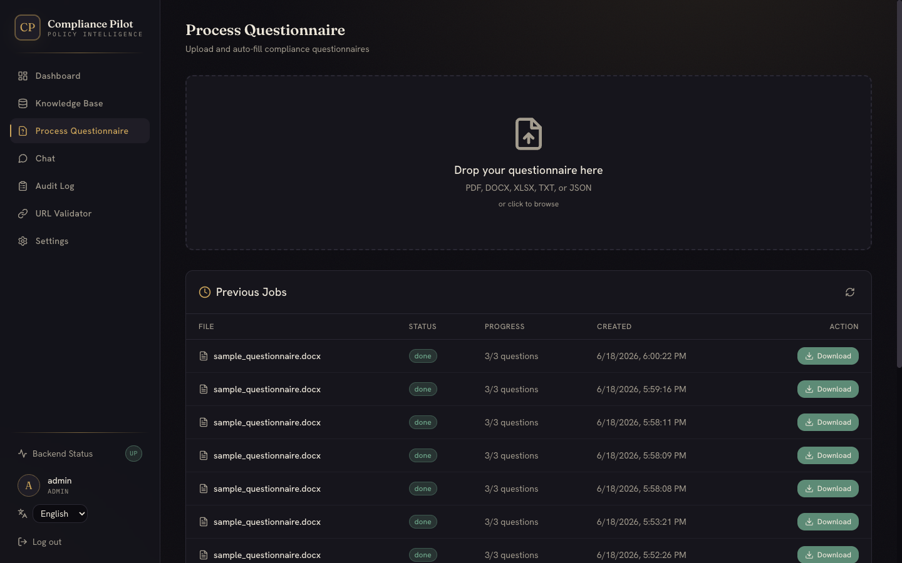
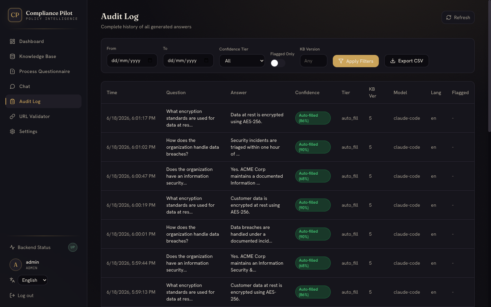

Upload your policy library. Upload any security questionnaire. Get it back filled with accurate, cited answers — in the original format, in minutes. Every response sourced, scored, and sealed.
A React SPA over an async FastAPI core, backed by a Qdrant vector store and your choice of local LLM — the Claude Code CLI (default) or Ollama. Embeddings run on a local Ollama instance. Everything runs on your own infrastructure; no questionnaire data leaves the network.
Single-node by default; the embedding host can be split onto a GPU box for throughput.
Dashboard · Knowledge Base · Process · Chat · Audit · URL Validator · Settings
httpOnly access + refresh tokens, CSRF double-submit, role-based access
97 pytest (mocked) + 44 Playwright end-to-end, all green
A deliberate "Obsidian & Champagne" identity — Fraunces display serif, warm near-black, and a single champagne accent. Confidence is rendered as a seal; the whole app is responsive down to mobile.





Policy documents flow through a five-step pipeline: parse, normalize to markdown, chunk by section, generate dual embeddings (dense + sparse), and store in a versioned Qdrant collection.
Dense vectors capture meaning — "protect stored information" ≈ "data at rest encryption." Sparse vectors capture exact terms — "SOC 2 Type II." Compliance needs both, fused by reciprocal rank fusion.
Compliance tooling has to be trustworthy itself. Auth, input handling, and background work were all built to survive restarts, multiple workers, and hostile input.
httpOnly access & refresh tokens (no token in localStorage), double-submit CSRF on mutations, silent refresh, role-based access.
Admin-settable Ollama/embed URLs must resolve to loopback/private hosts; numeric ranges validated server-side.
Filenames sanitized to basenames, zip-slip guarded, backup restore confined to its directory, upload size capped.
Login rate-limited per user + IP; a strong JWT_SECRET is enforced in production.
Job cancellation & the ingestion lock live in the DB — they survive restarts and stay correct across workers. Per-question writes are atomic.
Questionnaire processing streams status over Server-Sent Events (with graceful polling fallback) — no hammering the API.
Each retrieval feature compounds. Versus a vanilla "dense-only, single-query" RAG setup, the stack meaningfully lifts answer quality on keyword-critical compliance questions.
Hybrid search + query expansion + re-ranking + a compliance-specific prompt + confidence tiers — together they move answers from "plausible" to "defensible."
Answers are written back into the source document — not dumped as text. PDFs are returned as editable DOCX.
| Input | Read | Write | Output | ||
|---|---|---|---|---|---|
| DOCX | Docling | → | python-docx | → | DOCX |
| XLSX | Docling | → | openpyxl | → | XLSX |
| Docling + PyMuPDF | → | python-docx | → | DOCX | |
| JSON | Fuzzy-key parser | → | JSON writer | → | JSON |
| TXT / CSV / MD | Direct read | → | Text writer | → | TXT |
| Backend | Python 3.11 · FastAPI (async) · SQLAlchemy + aiosqlite |
| Vector DB | Qdrant — dense + sparse hybrid, RRF fusion |
| Embeddings | Ollama qwen3-embedding:8b (dense) · FastEmbed BM42 (sparse) |
| LLM | Claude Code CLI (default) or Ollama |
| Doc parsing | IBM Docling · python-docx · PyMuPDF · openpyxl |
| Frontend | React 18 · Vite · Tailwind · Radix UI · i18next |
| Auth | JWT in httpOnly cookies + CSRF · bcrypt |
| Tests | pytest (97) · Playwright (44, end-to-end) |